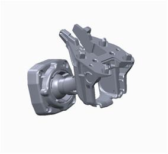
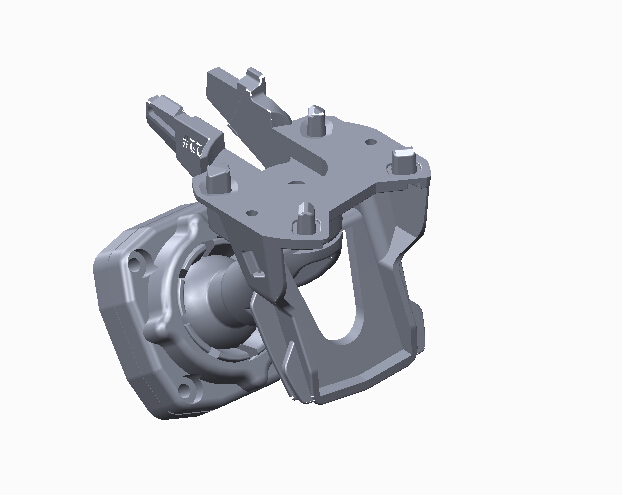
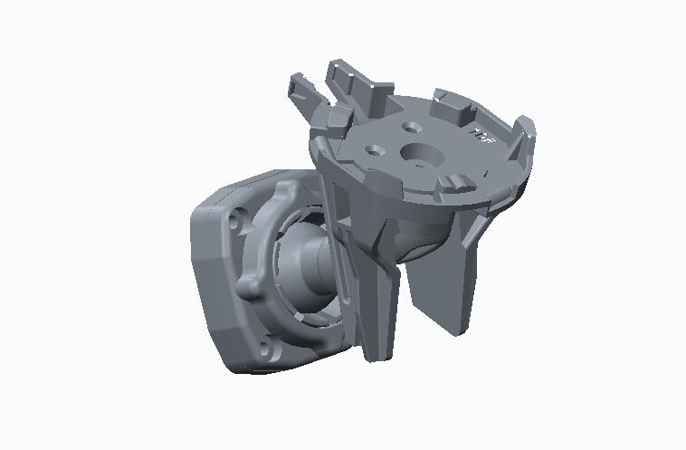
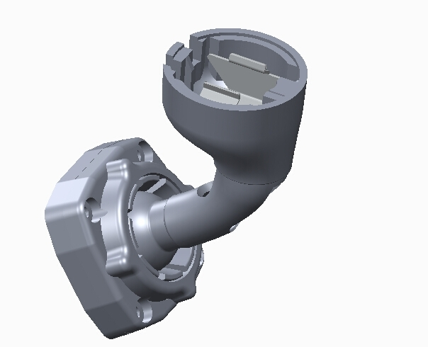
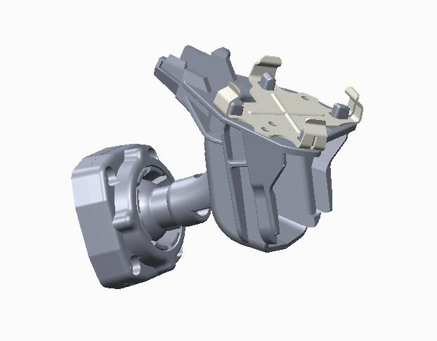
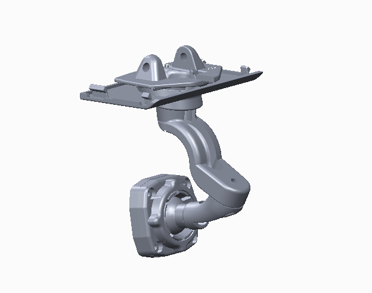
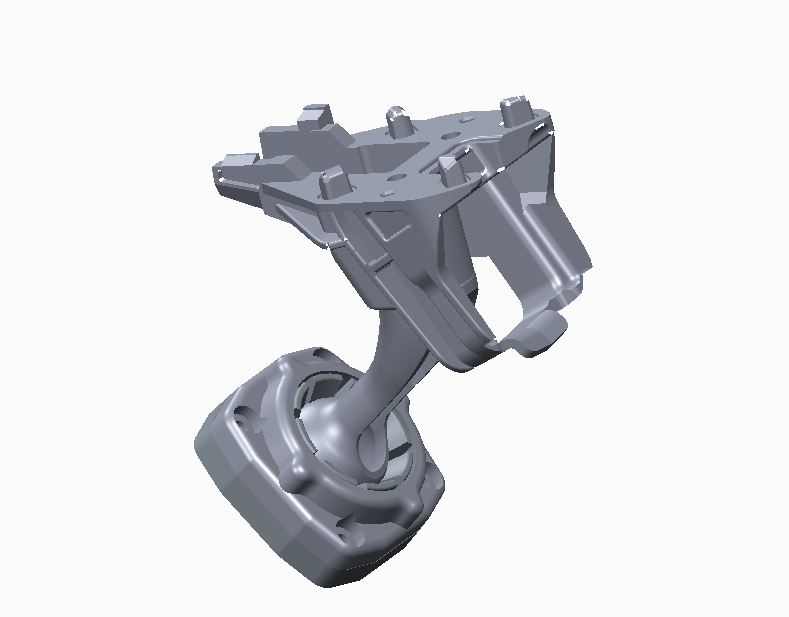

ky.db 真实记录#242424 · 面 #2f2f2f · 强调 #6cc9ff），
只改结构、层级、字号、留白，这样你能单独判断「布局好不好看」。
看完直接回我一个字母（A / B / C）或组合（例如「A 的骨架 + C 的表格」），我再按选定方案改 app/ 代码。
| 方案 | 布局取向 | 最适合的场景 |
|---|---|---|
| A 左列表 + 右详情 | 主从布局（master-detail）：左边一列结果，右边看大图与详情 | 知道车型，要一个明确的支架号和图，逐条看 |
| B 图卡网格 | 画廊布局（gallery / card grid）：图大、号大、一屏 4 个 | 不知道编号，靠肉眼比形状选件 |
| C 数据台表格 | 数据台（data desk）：表格为主，字号行高拉开，列重排 | 批量核对、复制编号、报给客户，一屏看最多条 |
先看真实截图（logs/ui_running_window.png）：

现状：1280×800 实际运行窗口。下面 7 条是从这份截图和 ui.py/theme.py 里读出来的具体问题，不是感觉。
| # | 病灶 | 证据 | 影响 |
|---|---|---|---|
| 1 | 层级扁平（flat hierarchy） | 标题 14px / 正文 12px / 提示 11px，三档只差 1px，且标题与正文同色系 | 眼睛没有落点，整屏"一片糊"，这是最主要的丑 |
| 2 | 四层横带（stacked strips） | 工具栏 40 + Tab 条 36 + 页标题行 30 + 筛选行 34 ≈ 140px | 26% 高度被"框架"吃掉，内容区被压到 620px |
| 3 | 卡片与表格重复（duplicate display） | model_page.py 既有 CardStrip 又有明细表，同一条记录出现两次 | 最贵的位置（首屏首行）给了重复信息 |
| 4 | 列宽失衡（column imbalance） | 「年款（原文）」320px，实际只有少数行需要读全；「车型」吃掉剩余全部宽度 | 该宽的窄、该窄的宽，表格像 Excel 拼贴 |
| 5 | 来源 A/B 上桌面 | 表格里有「来源」列，A/B 是内部抓取路线（crawl route）概念 | 用户看不懂，纯噪声占列位 |
| 6 | 图片裸贴在深底 | 支架图是白底产品图，直接放 #1f1f1f 底上成白方块 | 刺眼、切割版面，视觉重心被白块抢走 |
| 7 | 无空态 / 无焦点 | 查询前表格大片空白；状态栏塞 6 个统计数字同权重 | 第一眼"没做完"，像工具脚手架 |
| 修正 | 做法 |
|---|---|
| 字号阶梯 | 12 → 13 基准，标题 18～20，数字 15～24，提示 11；标题用亮一档的白（#ececec），正文降一点（#dcdcdc） |
| 横带合并 | 四层压成两层：顶部命令栏（含搜索）+ 一条筛选条；Tab 用分段控件（segmented control）替代 |
| 图片底板 | 所有支架图装进浅色底板（photo plate #ececec + 4px 圆角），白底图不再直接怼深底 |
| 来源降级 | A/B 从"列"降级为小圆点（dot）放到支架号旁，鼠标悬停才出 tooltip |
| 去掉重复 | 卡片条与表格二者只留一个（A/B 留卡片，C 留表格） |







方案 A：左列表 420px（每行 66px，缩略图 44px）+ 右详情自适应；详情里"复制支架号"是主按钮。
| 区域 | 规范 |
|---|---|
| 顶部命令栏 | 高 52，标题 14/600，全局搜索 300 宽，Tab 改为右端分段控件 |
| 第二层筛选条 | 高 56，字段 12px / 内边距 6×10，主按钮 accent 蓝，右侧放视图切换 |
| 左列表 | 420 宽 · 行高 66 · 选中行左侧 2px 蓝条 + 10% 蓝底 · 支架号 15px 等宽 |
| 右详情 | 图版 330×250（浅底）· 支架号 24px 等宽 · 键值行 7px 上下留白 + 发丝分隔线 |
| 方向键 | 列表支持 ↑↓ 切换（键盘遍历 keyboard traversal），选完直接 Ctrl+C 复制 |
缺点 / 风险：左列表一屏约 10 个支架（奥迪全品牌 7 个刚好），更多的要滚动；右详情占掉一半宽度，批量核对时信息量偏低。
方案 B：顶部居中大搜索 + 分段切换；4 列卡片（每张约 288×250，图 146 高），选中卡片描蓝边，底部一条选中操作条。
| 区域 | 规范 |
|---|---|
| 顶栏 | 高 64 · 搜索框 520×34 圆角 20 居中 · 左侧 KY 标识块 |
| 视图切换 | 胶囊（pill）居中，选中实心 accent |
| 卡片 | 4 列 · 间距 14 · 图版 146 高（浅底）· 编号 20px 等宽 · 年款用 chip |
| 选中态 | 1px 蓝边 + 内阴影 + 编号变蓝；点击不跳页，只更新底部操作条 |
| 性能 | 卡片图片按需解码（lazy decode），复用现有 thumbs.py 磁盘缓存 |
缺点 / 风险：卡片装不下"年款原文"和车型名，精确核对还得点进详情；结果少时（1～2 个支架）大片空白；QListView 自定义 delegate 工作量最大。
| 支架号 | 车型 | 年款区间 | 年款原文 | 来源 | 操作 | |
|---|---|---|---|---|---|---|
| 141 | 奥迪Q5（进口） | 2017 – 2021 | 2017款到2021款 | B | 复制 · 反查 | |
| 141 | 奥迪SQ5（进口） | 2018 – 2023 | 2018款到2023款 | B | 复制 · 反查 | |
| 141 | 一汽奥迪Q5L sportback | 2021 – 2023 | 2021款 2022款 2023款 | B | 复制 · 反查 | |
| 22 | 一汽奥迪Q5 | 2013 – 2018 | 2013款到2018款 | B | 复制 · 反查 | |
| 22 | 奥迪Q5（进口） | 2013 | 13款 | B | 复制 · 反查 | |
| 22 | 奥迪SQ5（进口） | 2014 – 2017 | 17款，15款，14款 | B | 复制 · 反查 | |
| 10 | 一汽奥迪Q5 | 全部年款 | 2010款舒适型 技术型 2011款全部 2012款舒适型 … | A/B | 复制 · 反查 | |
| 10 | 奥迪Q5（进口） | 2009 – 2012 | 09款，10款，12款 | B | 复制 · 反查 | |
| 10 | 奥迪SQ5（进口） | 2013 | 13款 | B | 复制 · 反查 | |
| 3A | 一汽奥迪Q5 | 2010 – 2012 | 2010款进取型 2012款2.0TFSI进取型 | B | 复制 · 反查 | |
| 141 | 奥迪Q5（进口） | 2017 – 2021 | 2017款到2021款 | A | 复制 · 反查 | |
| 22 | 一汽奥迪Q5 | 2013 – 2018 | 2013款到2018款 | A | 复制 · 反查 | |
| 22 | 奥迪Q5（进口） | 2013 | 13款 | A | 复制 · 反查 | |
| 10 | 一汽奥迪Q5 | 全部年款 | 2010款舒适型 技术型 2011款全部 2012款舒适型 … | A | 复制 · 反查 | |
| 10 | 奥迪Q5（进口） | 2009 – 2012 | 09款，10款，12款 | A | 复制 · 反查 | |
| 3A | 一汽奥迪Q5 | 2010 – 2012 | 2010款进取型 2012款2.0TFSI进取型 | A | 复制 · 反查 |
方案 C：大标题 + 大计数（20px / 16px 数字），表格行高 38、正文 13，年款区间做成 chip，首列嵌 36px 缩略图，来源降为圆点。
| 区域 | 规范 |
|---|---|
| 标题区 | 18～20px 标题 + 计数（数字 16px accent 等宽），替换现在的 14px「按车型查支架 model → bracket」 |
| 筛选条 | 单行 12px 字段，右侧分段控件 + 列设置；总高 44（现在两层共 64） |
| 表头 | 11px 弱化色、sticky、无竖线；行高 38，斑马纹从中灰降到 #282828 |
| 列序 | 缩略图 → 支架号（等宽加粗）→ 车型 → 年款区间（chip）→ 年款原文（弱化）→ 来源（圆点）→ 操作 |
| 操作 | 双击行 = 反查；右键菜单 = 复制编号 / 复制整行；键盘可全选复制 |
models.py 列定义 + theme.py QSS + ui.py 表头），风险最低；一屏 16 行，批量核对最快；不做图像排版，天然不会"花"。缺点 / 风险：图片缩到 36px 就只能认"大概是哪种"，靠图选件不行；"好看"的提升主要靠字号/行高/留白，仍然是表格型工具，观感偏工程化。
| 维度 | 现状 | A 主从 | B 图卡 | C 数据台 |
|---|---|---|---|---|
| 首屏可读条数 | 6 行 + 3 卡（重复） | 6～7 行 + 1 详情 | 8 张大卡 | 16 行 |
| 图片权重 | 中（白块突兀） | 大（330×250） | 大（4×170 高） | 小（36px 缩略） |
| 复制编号路径 | 手动选中表格 | 1 次点击 | 2 次点击 | 1 次点击 / 右键 |
| 精确核对年款原文 | 好 | 中（详情内） | 差（chip 摘要） | 好 |
| Q1/Q2 缝合 | 需切 Tab | 一屏内 | 需切视图 | 双击行 |
| 结果只有 1 条时 | 空洞 | 尚可 | 大片空白 | 可接受 |
| 代码改动量 | — | 约 380 行 / 4 文件 | 约 460 行 / 5 文件 | 约 240 行 / 3 文件 |
| 实现风险 | — | 中（新骨架） | 高（自定义 delegate） | 低 |
| "好看"提升 | 基准 | 明显 | 最明显 | 中等 |
| Token | 值 | 用途 / 说明 |
|---|---|---|
| 字号 | 13 / 12 / 11 | 正文 13（现 12）· 次要 12 · 提示 11；标题 18～20；大数字 15～24 |
| 行高 | 38 / 66 | 表格行 38（现 26）· 列表行 66（图片行） |
| 圆角 | 4 / 6 | 输入框/按钮 4；卡片与图版 6（现在全部 3，显得硬） |
| 间距 | 8 / 12 / 16 / 20 | 同级 8 · 组内 12 · 组间 16～20（现在几乎全用 8，缺乏节奏） |
| 描边 | #3c3c3c / #4a4a4a | 发丝线（hairline）用浅一档，避免"全是框" |
| 图片底板 | #ececec | 白底产品图统一装进浅底，圆角 4～6 |
| 强调色 | #6cc9ff / #1a86d9 | 只用于：主按钮、选中行、支架号、关键数字（现在到处撒，等于没有强调） |
| 来源圆点 | A 紫 / B 蓝 | 6px 圆点 + tooltip，不再占一整列 |
| 文件 | A | B | C |
|---|---|---|---|
| app/ui.py | 重写 Page 骨架 + 列表项组件 | 新增卡片网格组件 | 只调表头与间距 |
| app/pages/model_page.py | 重写（左列表 + 详情） | 重写（网格 + 选中条） | 改列定义与空态 |
| app/pages/bracket_page.py | 部分复用右详情 | 复用卡片网格 | 改列定义 |
| app/theme.py | +约 60 行 QSS | +约 80 行 QSS | +约 40 行 QSS |
| app/main.py | Tab → 分段控件（QStackedWidget） | 同 + 居中搜索栏 | 筛选条合并 |
| app/db.py / models.py | 不改 SQL、不改 Repository 接口（三版都只用现有 7 个方法） | ||
技术约束（必须提前知道）：PySide6 的 QSS 只支持 CSS 2.1 子集 —— 没有 flex / grid / box-shadow / transition。 A 的左右分栏要用QSplitter或定宽 +QHBoxLayout；B 的卡片网格要用QListView(IconMode)+ 自定义 delegate（或手写 FlowLayout）； C 的 chip 与圆点要用自定义QStyledItemDelegate绘制，否则只能用文字色区分。这些都只是工作量，不是做不到。
| # | 问题 | 选项 |
|---|---|---|
| 1 | 选哪版布局？ | A / B / C / A+C 混搭 / 其他组合 |
| 2 | 字号基准是否升到 13px？ | 升（更好看，一屏少 2 行）· 保持 12（一屏多 2 行） |
| 3 | 来源 A/B 是否从界面上彻底去掉？ | 只留圆点 + tooltip · 完全隐藏 · 保留列 |
确定后我按方案改 app/ 代码，并在动手前先给一次「改动文件 + 行数 + 风险 + 回滚方式」的书面确认（按约定不先改代码）。